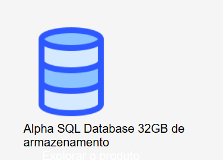

A Alpha Tec é uma empresa especializada em soluções tecnológicas desenvolvidas para facilitar processos, otimizar resultados e impulsionar o crescimento de pessoas e empresas. Nosso compromisso é entregar inovação de forma simples, prática e eficiente, oferecendo suporte completo em tecnologia para diversos tipos de necessidades. Com uma equipe qualificada e focada em resultados, a Alpha Tec trabalha com desenvolvimento de sistemas, consultoria em TI, manutenção de computadores, automação de processos e criação de soluções personalizadas. Nosso objetivo é conectar tecnologia e eficiência, garantindo que cada cliente tenha exatamente o que precisa para evoluir no mercado atual. Mais do que uma prestadora de serviços, a Alpha Tec é uma parceira estratégica. Atuamos de forma transparente, ágil e comprometida com a qualidade, sempre buscando novas formas de melhorar a experiência dos nossos clientes por meio da tecnologia. Na Alpha Tec, acreditamos que a inovação não precisa ser complicada — ela precisa ser útil. Por isso, entregamos soluções inteligentes que transformam desafios em oportunidades.
A Alpha Tec é uma empresa com 8 anos de atuação no mercado, construída com dedicação, inovação e compromisso em cada etapa de sua trajetória. Desde o início, trabalhamos para oferecer soluções tecnológicas eficientes e acessíveis, sempre acompanhando as mudanças do setor e evoluindo junto com as necessidades dos nossos clientes. Esse tempo de experiência fortaleceu nossa identidade e nos fez conquistar confiança, estabilidade e reconhecimento na área. Nosso maior diferencial está na nossa equipe. Contamos com profissionais altamente capacitados, qualificados e preparados para lidar com diferentes desafios tecnológicos. Cada colaborador passa por treinamentos constantes e acompanha as tendências mais recentes do mercado, garantindo que nossos serviços sejam sempre modernos, seguros e eficientes. Essa combinação de experiência e conhecimento técnico nos permite entregar resultados consistentes e manter o padrão de qualidade que define a Alpha Tec ao longo desses 8 anos.
A Alpha Tec possui uma sede muito bem localizada, escolhida estrategicamente para oferecer praticidade e acessibilidade a todos que utilizam nossos serviços. Situada em uma área central e de fácil acesso, nossa localização facilita o deslocamento de clientes, parceiros e colaboradores, tornando cada visita mais rápida e conveniente. Além disso, estar próxima a pontos importantes da cidade reforça nossa presença no setor tecnológico e nos mantém conectados ao que acontece ao nosso redor. Nosso espaço foi planejado para ser moderno, funcional e acolhedor. Contamos com um ambiente organizado que garante conforto durante atendimentos, reuniões e o trabalho diário da equipe. A estrutura física, combinada com a boa localização, contribui para um fluxo de trabalho mais eficiente e para uma experiência positiva de quem chega até nós. Essa posição estratégica fortalece nosso compromisso com a qualidade, a agilidade e a proximidade com quem confia na Alpha Tec.